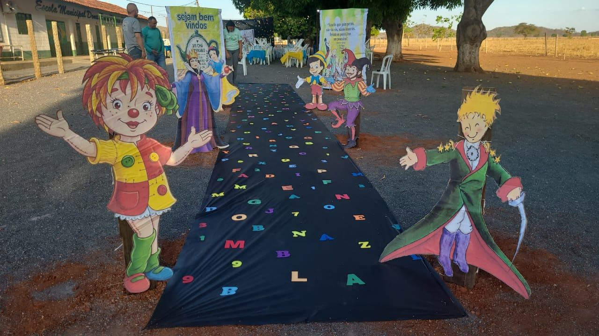

A formação continuada mês a mês
Os encontros e orientações da FLUPP registrados no grupo, de abril de 2025 a setembro de 2026. Toque em um item para ver o registro completo.
O que atravessou os dois anos
Alguns trabalhos voltaram em 2026 mais fortes do que em 2025. Toque em um projeto para ir até os registros dele na linha do tempo.
VII Chá Literário
A noite em que as turmas levaram ao pátio o que leram no ano. Abra a cortina e escolha uma apresentação para ver quem fez, o que leu e como foi.

Quanto aconteceu em cada mês
Cada barra é um mês, e a altura é o número de momentos registrados. Toque em uma barra para ir até aquele mês.
O que vem a seguir
Metas do plano de ação apresentadas pela FLUPP no balanço do primeiro semestre de 2026 e desafios que aparecem nos próprios registros.
Alfabetização e leitura
Fortalecer a alfabetização, a leitura e a escrita, com produções e reescritas textuais quinzenais em todas as áreas.
Resolução de problemas
Ler, interpretar e explicar por escrito o raciocínio na Matemática.
Apoio a cada estudante
Duplas produtivas e apoios diferenciados para estudantes em diferentes níveis de aprendizagem.
Evidências
Registrar avanços concretos: pasta sanfonada, planos de aula compartilhados e este portfólio.
Transporte escolar
Na volta às aulas de agosto de 2025, a falta de dois transportes reduziu a presença dos alunos.
Continuidade da equipe
Entre 2025 e 2026 houve trocas de professores. Manter os combinados da formação ajuda quem chega.
Todas as pessoas citadas nos registros
Equipe da escola, formadores, parceiros, poder público e estudantes que aparecem nomeados nas mensagens do grupo. Funções conforme descritas nos próprios registros.